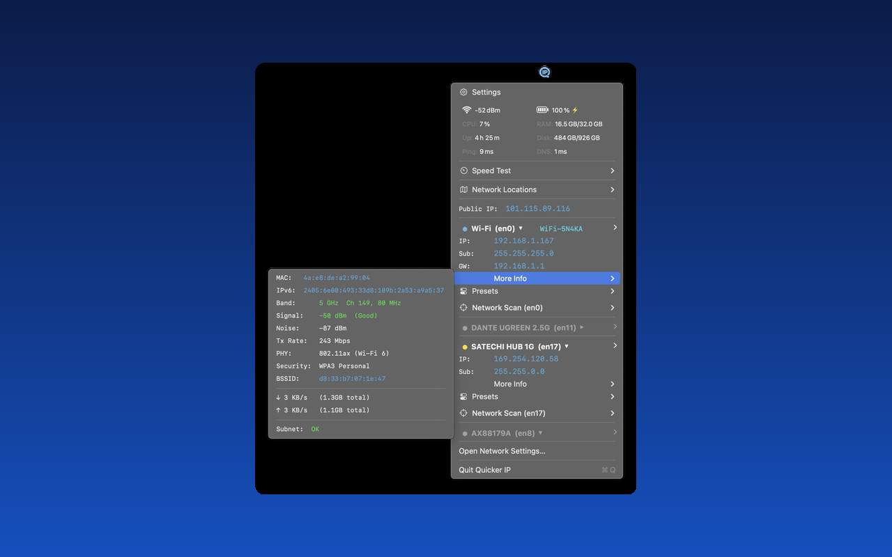
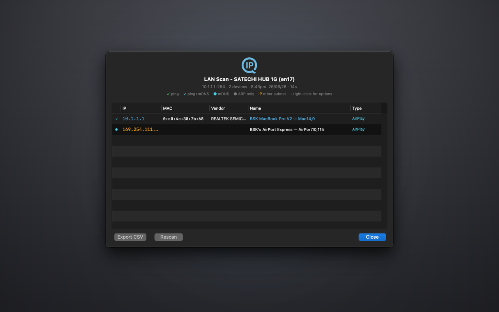
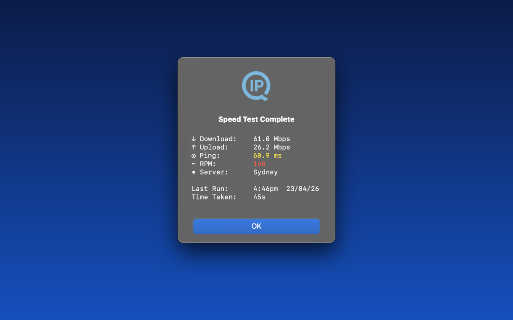
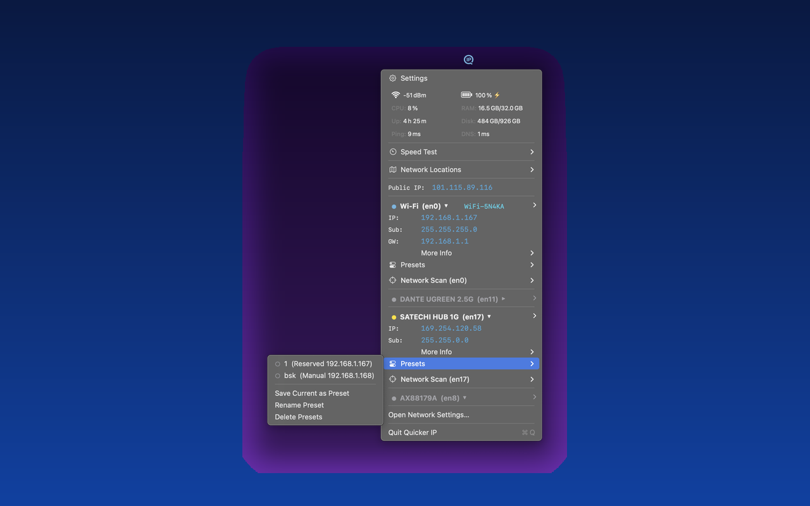
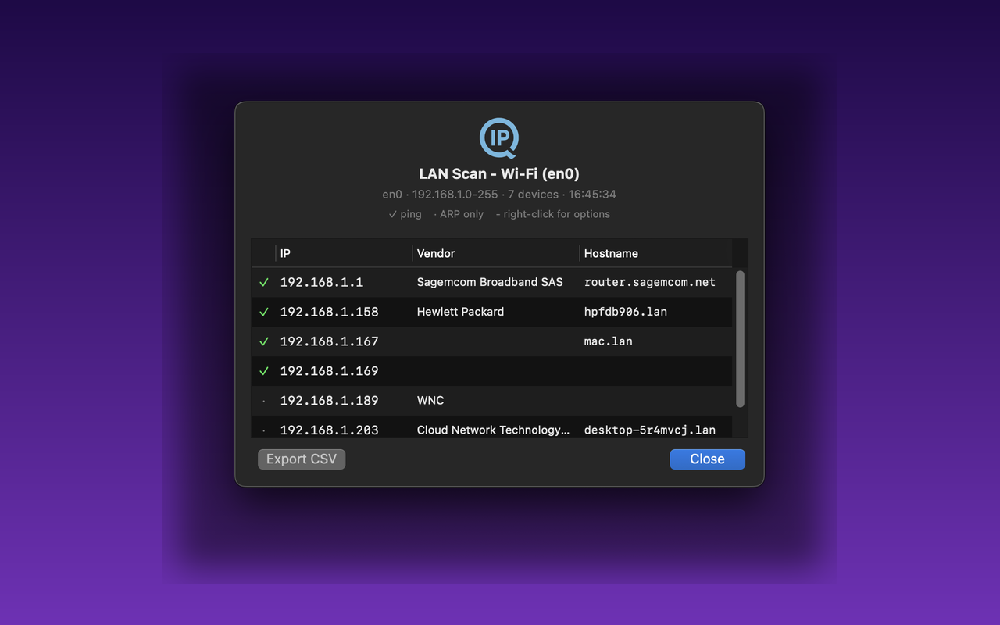
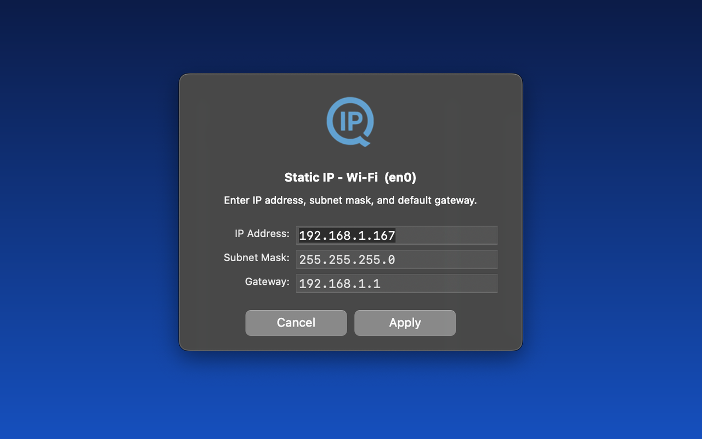

Quicker IP
{{ site.data.content.apps.quickerip.subtitle }}
Buy - {{ site.data.content.apps.quickerip.price }}
One-time purchase · 2 activations
{{ site.data.content.apps.quickerip.version }} · Released {{ site.data.content.apps.quickerip.released }}
May be tax deductible for AV professionals.
{{ site.data.content.apps.quickerip.tagline }}
{{ site.data.content.apps.quickerip.description }}






Lite vs Pro
| Feature | Pro $19.99 |
Lite Free |
|---|---|---|
| Menu bar IP display | Yes | Yes |
| All network adapters | Yes | Yes |
| Status dots | Yes | Yes |
| Click to copy IP / MAC | Yes | Yes |
| IP change notifications | Yes | Yes |
| Run at Login | Yes | Yes |
| System Info Panel | Yes | - |
| SSID + Wi-Fi details | Yes | - |
| Live speed display | Yes | - |
| IP configuration (DHCP / Static / Presets) | Yes | - |
| Speed test | Yes | - |
| Network scanner | Yes | - |
| Dante and pro audio network readiness | Yes | - |
| Network Locations management | Yes | - |
Features
-
{% for feature in site.data.content.apps.quickerip.features %}
- {{ feature }} {% endfor %}
Status Dots
Default route
Connected
Self-assigned
No IP
Inactive
IPv4 Off
⚠ Subnet overlap
IP Configuration
- Switch between DHCP, DHCP Reserved, Static, and IPv4 Off
- IP conflict and subnet overlap detection - checks both local adapters and network with visual warnings and notifications
- DHCP Reserved mode locks your IP while keeping auto subnet and gateway
- One-time password authentication for IP changes - works silently after that, even across restarts. Touch ID prompt for saving Locations.
Presets
- Save full IP configs (mode, IP, subnet, gateway) and re-apply with one click
- Global presets - any preset works on any adapter
- Visual indicators show which presets are active
Speed Test
- Built-in speed test using macOS networkQuality
- Download, upload, ping, and responsiveness (RPM)
- Live elapsed time in the menu while running
Network Scanner
- Full /24 subnet scan - see every device on your network
- Custom range scan for narrower or wider sweeps
- Single host ping with min/avg/max/loss stats
- Shows IP, MAC, vendor, hostname for each device
- Export results to CSV
Dante and Pro Audio Network Readiness
- MTU check - flags adapters below the 1500 byte minimum required for reliable Dante audio networking
- Link speed detection - confirms gigabit or better for Dante and high channel count networks
- Full/half duplex detection - colour-coded to flag half-duplex connections
- Subnet overlap warnings - flags conflicting adapter configurations in red
Wi-Fi Details
- SSID display in menu bar and adapter section
- Band, channel, signal strength, noise, Tx rate
- PHY mode, security type, BSSID
- Colour-coded signal quality indicators